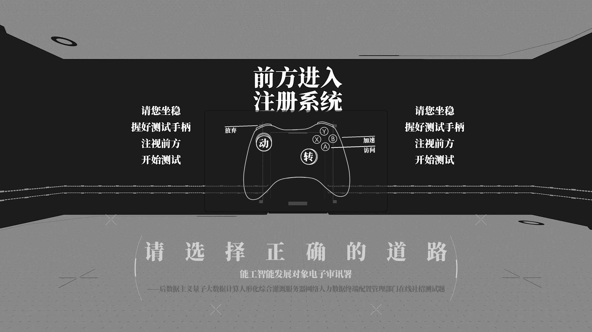
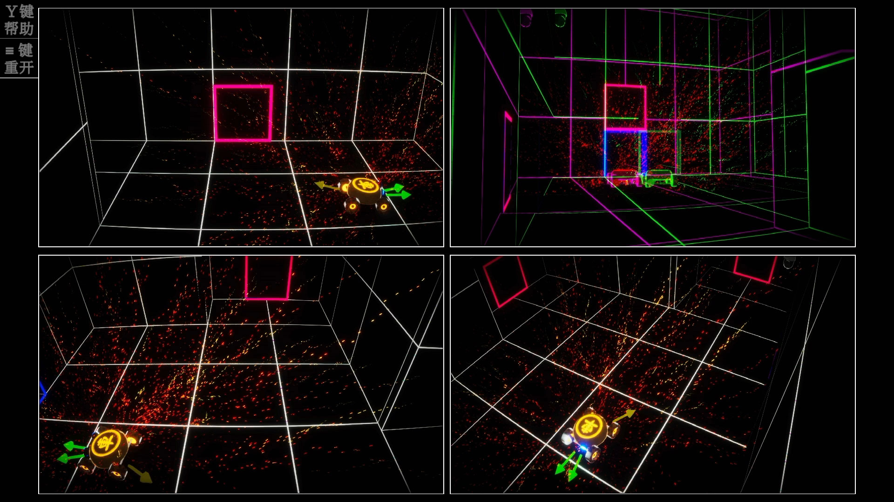
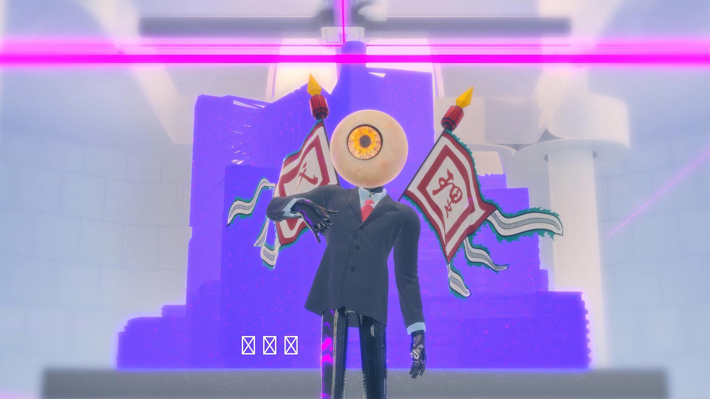

THE WORK OF
PENG-YIWEI
2019~2024
彭艺伟
Peng-Yiwei
尝试使用视觉交互、影像、声音等多媒体媒介手段来探讨事物的本身价值。作品以数据通融周遭的手段作为方法，围绕现实与幻想、现在与非现在、消费与生产进行凝练；有时会对道德语境与价值加以解读，但不局限于当下话题。
Try to use visual interaction, video, sound and other multimedia to explore the value of things in themselves. The works use the means of data integration as a method to condense around reality and fantasy, present and non-present, consumption and production; sometimes interpreting moral contexts and values, but not limited to current topics.
- >>> 个人创作 Works <<<

- 工人_博物馆 Post factory (2019)
- ——————

- 数据主义 Dataism (2020)
- ——————
- 
- 能工智能发展对象电子审讯署 Testing Before Hiring (2020)
- ——————
- 小石潭新记 XiaoShiTanJi Pseudo code (2021)
- ——————

- 玻璃数据 Glass Data (2021)
- ——————
- 天地银行NFT NFT TIANDY Bank (2021)
- ——————
- 
- 阈限志 the Record of Limen (2021)
- ——————
- XP，但是番茄花园版 eXPerienced and cracked (2022)
- ——————
- 
- 心机接口 the Meta-Universe Poetry (2023)
- ——————
- 文言程序训诂 Sino Primer Plus (2023)
- ——————
- 赤玉录 Agate Tablet (2024)
- ——————
- 昆虫说明书 iNsect iNstructions (2024)
- >>> 历程 CV <<<
- 国美科幻艺术协会10周年展览 再生园治 2059：Regeneration 2019 杭州 Hangzhou
- 第六届国际跨媒体艺术节 近未来：可能生活 2020 宁波 Ningbo
- 第六届国际跨媒体艺术节 国际青年影像作品展映 2020 宁波 Ningbo
- 上海西岸艺术中心 艺术与设计创新未来教育博览会 未来书写 2020 上海 Shanghai
- FALLAB & Bé Space 例外状态 THE NEW NORMAL 新年群展 2021 杭州 Hangzhou
- 浙江展览馆 “五月薪火” 国际青年艺术季 2021 杭州 Hangzhou
- “现在史” 第三届之江国际青年艺术周暨中国美术学院毕业季 2021 杭州 Hangzhou
- HiShorts! 厦门短片周实验单元 2021 厦门 Xiamen
- iArt原·美术馆 青年艺术计划 多元玩家 2021 重庆 Chongqing
- HOWART 后毕业季 城市艺术大展 2021 北京 Beijing
- 上海西岸艺术中心 艺术与设计创新未来教育博览会 今夜不科幻 2021 上海 Shanghai
- OPPO Renovators Emerging Artists Project 2022 伦敦 London
- 城市游策 CITY RUN XP，但是番茄花园版 2022 杭州 Hangzhou
- 跨媒体青年艺术家推介计划首展 PARTY AFTER PARTY 2023 杭州 Hangzhou
- >>> 社交媒体 Social <<<